The Mechanics of Object Oriented JavaScript
Table of Contents
More than you want to know.
Prerequisites - Execution Context, this
If you’re not already familiar with execution context in JavaScript, it is a topic worthy of a separate and lengthy article in and of itself. I recommend this one. A brief review:
The execution context of an invocation is what is referenced by the key word this within a function definition. The implicit execution context of an invocation is the receiver- whether an implicit receiver (as in function invocation) or an explicit receiver (as in method invocation).
As we shall see, this is useful because it allows programmers to reference the calling object and its properties from within the definition of a method which is shared among many objects.
Functions are objects
In Javascript, functions are a type of object. As such, they contain properties like any object can. Every function has a prototype property which, by default, references an object. This prototype object contains a constructor property which, by default, references the function.
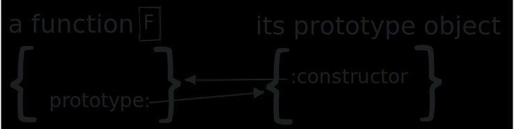
To demonstrate this with code, try the following in your browser’s console:
function aFunction() { // ... } aFunction.prototype; // {constructor: ƒ} aFunction.prototype.constructor === aFunction; // true
Prototypes
In JavaScript, every object has an object prototype referenced by its [[Prototype] property. This property can be accessed by the __proto__ accessor method. (It’s pronounced “dunder proto” due to its leading and trailing double underscores). It’s important to note the distinction between a function’s prototype property and the [[Prototype]] property which belongs to all objects (including functions).
Before going further, I should mention that accessing an object’s [[Prototype]] directly via the __proto__ accessor is deprecated. JavaScript provides the methods Object.getPrototypeOf and Object.setPrototypeOf to access an object’s [[Prototype]]. However, I will continue to use __proto__ for explanatory purposes. If you want to test my code in your browser and you find that __proto__ doesn’t work, you can substitute foo.__proto__ with Object.getPrototypeOf(foo) and it should work.
When creating an object via an object literal, its [[Prototype]] property refers to the same object referenced by Object.prototype, which serves as the base [[Prototype]] for all objects. This base prototype object has its own [[Prototype]] property which stores null.
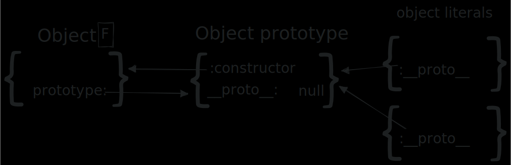
Figure 1: Note that Object is a JavaScript function.
( {} ).__proto__ === Object.prototype; // true;
Object.prototype.__proto__ === null; // true;
Functions being objects, they also have their own [[Prototype]] which I have omitted from the above diagram since its not central to the point of this article. However, for those who are curious, here’s something to chew on:
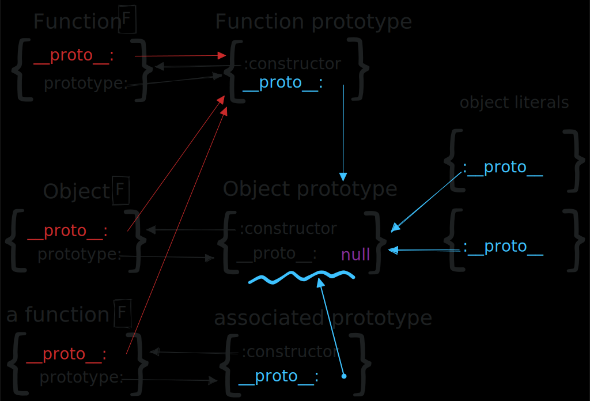
Behavior Delegation and the Prototype Chain
The prototype chain of an object refers to the series of objects referenced by each others' [[Prototype]] properties.
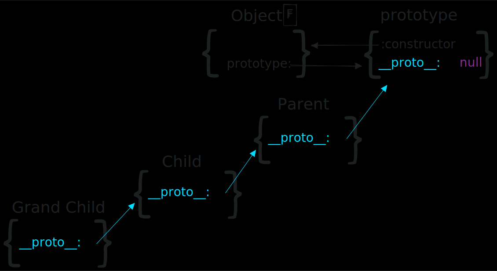
A parent is the [[Prototype]] of its child.
When you attempt to access a property of an object, if JavaScript doesn’t find the property within the object, it will search the object’s prototype chain until it either finds the property or reaches the end of the chain, in which case it returns undefined. This is why you can sometimes invoke a method on an object which hasn’t been assigned to a property of that object. All JavaScript objects by default have access to the properties of the object referenced by Object.prototype since it is at the end of their prototype chain.
({}).notAProperty; // undefined
({}).hasOwnProperty('foo'); // false
({}).toString(); // '[object Object]'
Type Object.prototype into your browser’s console to view the available methods.
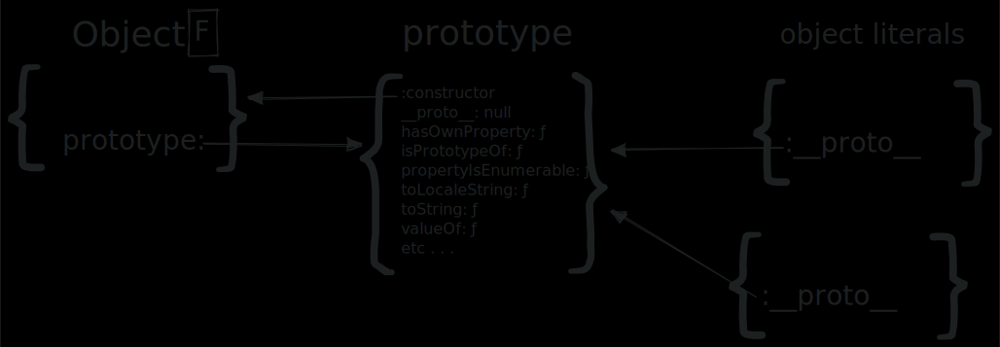
When an object uses methods which are not assigned to one of its own properties, but are referenced further along the prototype chain, we can call it behavior delegation since the requested invocation is passed along, or delegated, to an object further along the chain. Sometimes this is referred to as prototypal inheritance.
Constructor functions
A constructor function is merely a function whose intended purpose is to instantiate objects. Purely by convention, the name of a constructor function is capitalized to distinguish it from other functions. From the perspective of JavaScript, constructor functions are no different from any other functions and are treated the exact same way (despite that the syntax highlighting in your text editor might lead you to believe otherwise).
The new keyword
When a function invocation is prefixed with the new keyword, the execution context for the invocation is set to a new object, sometimes referred to as an instance, which is returned by the expression. (Note: It is only returned by the expression if an object isn’t explicitly returned within the function definition.) Therefore, within the definition of a constructor function, this can be used to assign instance properties to values. If you forget to use new when invoking your constructor function, you’ll assign values to properties of the global object. Don’t do that.
function Constructor(val) { this.foo = val; } const instance = new Constructor('bar'); instance.__proto__ === Constructor.prototype; // true const instance2 = new Constructor('baz'); instatnce2.__proto__ === Constructor.prototype; // true instance.foo; // 'bar' instance2.foo; // 'baz'
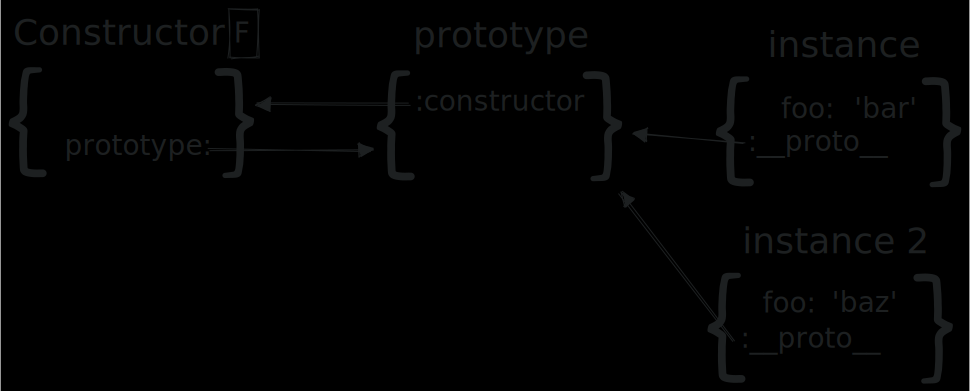
Notice that the [[Prototype]] of the instances is the same object referenced by Constructor.prototype. We can define functions as properties of the prototype to create shared methods accessible to all instances.
Constructor.prototype.xyz = function() { return this; } instance.xyz(); // {foo: 'bar'} instance2.xyz(); // {foo: 'baz'} instance.hasOwnProperty('xyz'); // false;
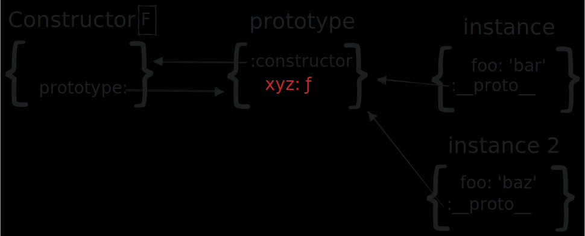
Inheritance
Supposing we want to create a subtype of object that inherits from Constructor. Our first naive attempt might look something like this:
// bad function ChildConstructor(val, ownValue) { Constructor.call(this, val); this.qux = ownValue; } const childInstance = new ChildConstructor('xyzzy', 5); childInstance.xyz(); // Uncaught TypeError: // childInstance.xyz is not a function
The problem with this is that the [[Prototype]] property of ChildConstructor.prototype points to Object.prototype.
childConstructor.prototype.__proto__ === Object.prototype; // true
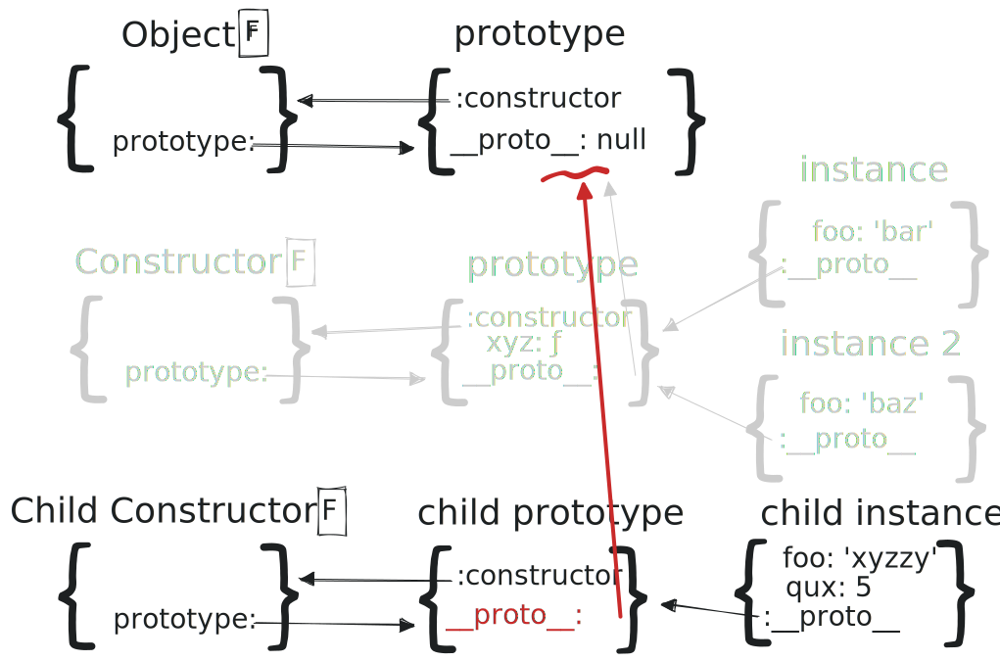
Therefore, no property by the name of xyz can be found on the child instance’s prototype chain. In order to have access to xyz, we need to put Constructor.prototype on the child instance’s prototype chain by setting ChildConstructor.prototype’s [[Prototype]] to be Constructor.prototype. What a mouthful! Our next naive attempt might look something like this:
// less bad function ChildConstructor(val, ownValue) { Constructor.call(this, val); this.qux = ownValue; } ChildConstructor.prototype.__proto__ = Constructor.prototype; const childInstance = new ChildConstructor('xyzzy', 5); childInstance.xyz(); // {foo: 'xyzzy', qux: 5}
This works, however, it is recommended that you avoid altering the [[Prototype]] of an object for performance reasons.
This article on MDN offers a better explanation. Alternatively, you can reassign the child constructor’s prototype property to a new object whose [[Prototype]] is already the desired object, using Object.create.
// not bad function ChildConstructor(val, ownValue) { Constructor.call(this, val); this.qux = ownValue; } ChildConstructor.prototype = Object.create(Constructor.prototype); ChildConstructor.prototype.constructor = ChildConstructor; ChildConstructor.prototype.childFunction = function() { return this.foo; } const childInstance = new ChildConstructor('xyzzy', 5); childInstance.xyz(); // {foo: 'xyzzy', qux: 5} childInstance.childFunction(); // 'xyzzzy'; childInstance.qux; // 5 childInstance.__proto__ === ChildConstructor.prototype; // true childInstance.constructor === ChildConstructor; // true
Object.create, when called, creates and returns a new object whose [[Prototype]] is the argument to the invocation of Object.create. But this new object doesn’t have its own constructor property. Notice that we assign ChildConstructor to ChildConstructor.prototype.constructor. Otherwise the expression childInstance.constructor would return Constructor instead of ChildConstructor.
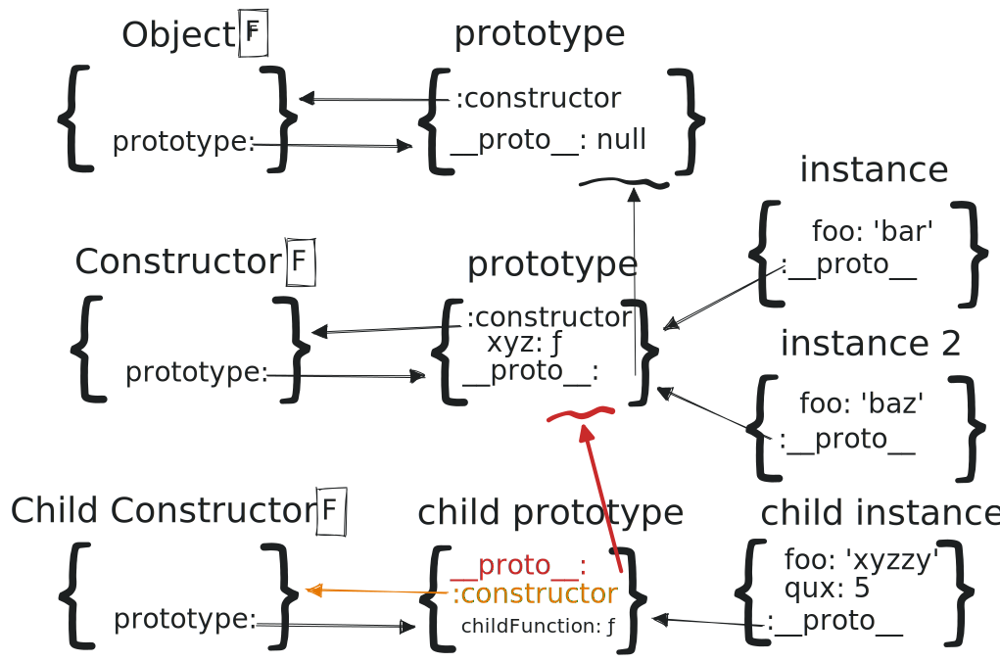
Objects Linking to Other Objects (OLOO)
To quickly build a mental model of the OLOO pattern of object creation, compare the above diagram to the following:
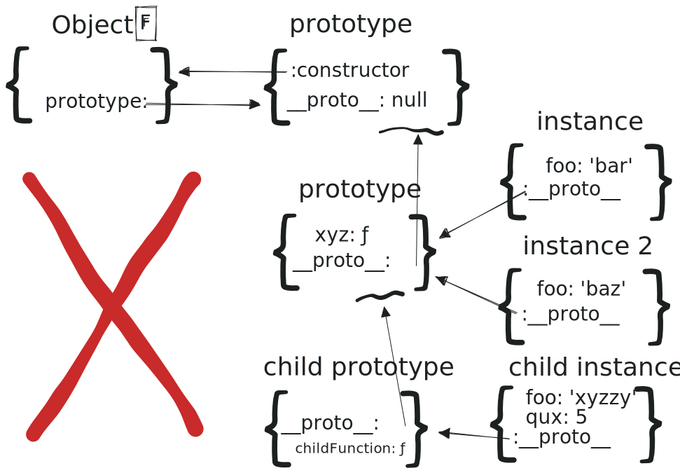
The purpose of Object.create is worth reiterating:
Object.create, when called, creates and returns a new object whose [[Prototype]] is the argument to the invocation of Object.create.
We can use an object literal to create a prototype. Then we’ll use Object.create to make objects which link to that object. We can use an initializer method to set the values of instance properties on our newly created object.
const Prototype = { addA: function(n) { return this.a + n; } init: function(n) { this.a = a; return this; } } const instance = Object.create(Prototype).init(20); instance.a; // 20 instance.addA(10); // 30 instance.__proto__ === Prototype; // true
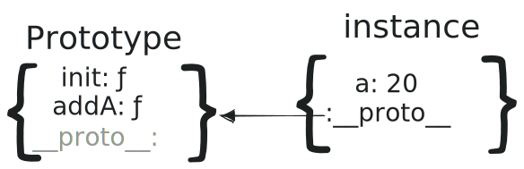
The process for making a subtype is fairly straightforward.
const ChildPrototype = Object.create(Prototype); ChildPrototype.init = function(a, b) { Prototype.init(this, a); this.b = b; return this; }; const childInstance = Object.create(ChildPrototype).init(5, 7); childInstance; // {a: 5, b: 7} childInstance.addA(3); // 8 childInstance.__proto__ === ChildPrototype; // true childInstance.hasOwnPrototype('addA'); // false
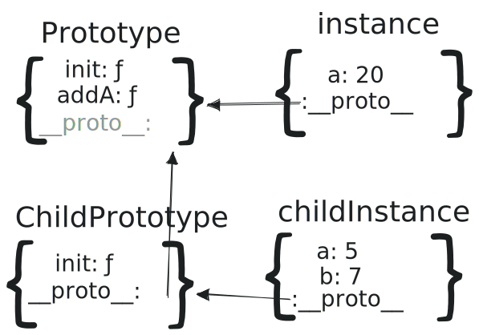